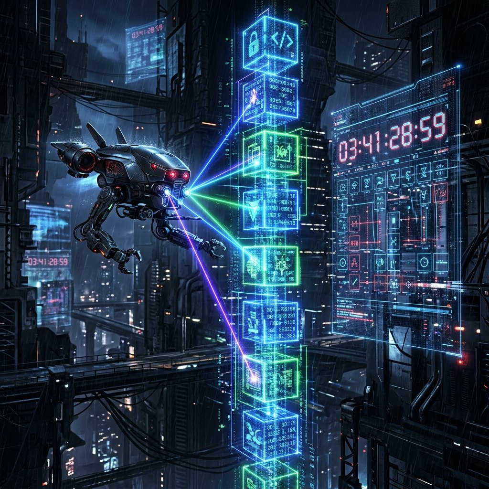

Explore Related Systems

Flagship AI Hub
Run Nexus & Skill Holders Studio
Central multi-agent AI operating hub orchestrating 14+ LLM apps, MCP tool pipelines, and portable SKILL.md agent packages.

ML + Identity AI
Autonomous UAR, NoPE & ML Peer-Divergence Engine
Graph-theoretic & neural ML access governance auditing 500,000+ identity grants and Zero-Standing-Privilege policies.

Agent Skill + SecOps
Vulnerability Verifier & Supply-Chain Provenance Suite
Autonomous SLO compliance agent, portable SKILL.md package, and SLSA/BCID binary provenance verifier.